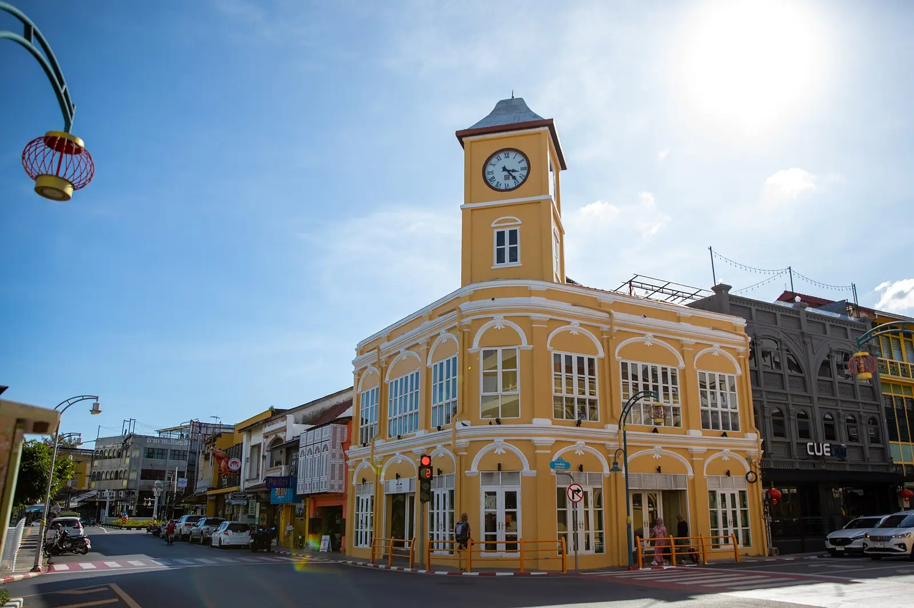
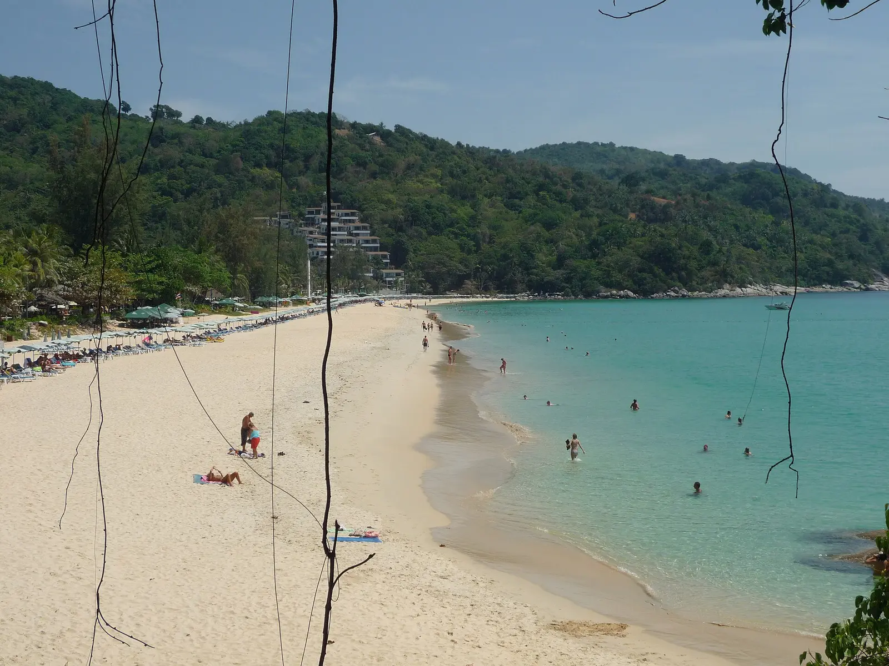

เกี่ยวกับจุดหมายนี้
ภูเก็ต เป็นจุดหมายด้านทะเลในจังหวัดภูเก็ต เหมาะสำหรับใช้วางแผนการเดินทางและตรวจสอบข้อมูลสถานที่จากแหล่งอ้างอิง
ข้อมูลสถานที่ที่ตรวจสอบแล้ว
- สถานที่ท่องเที่ยว
- ย่านเมืองเก่าภูเก็ต
- เวลาเปิด–ปิด
- พื้นที่สาธารณะเปิดตลอดวัน; ถนนคนเดินวันอาทิตย์ 16:00–22:00 น.
- ค่าเข้าชม
- เข้าชมพื้นที่สาธารณะฟรี
ตรวจสอบล่าสุด: 2026-08-08
รูปภาพที่เชื่อมกับสถานที่


